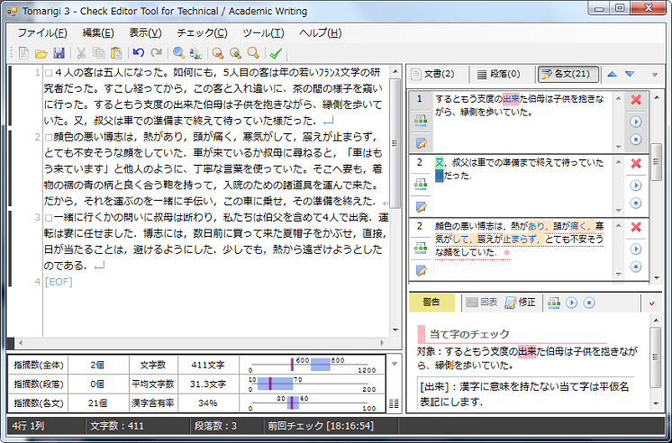
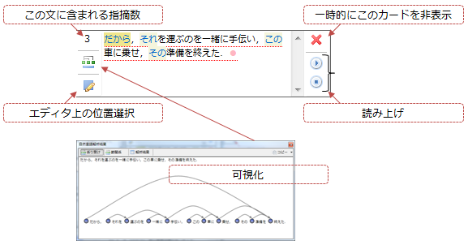
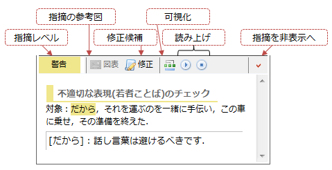
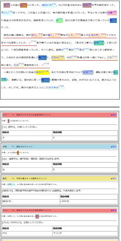
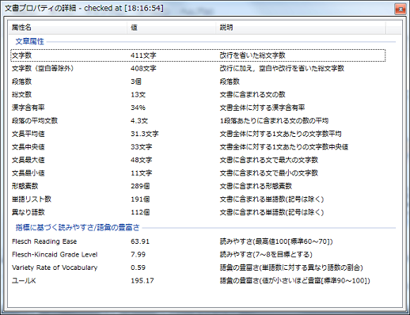
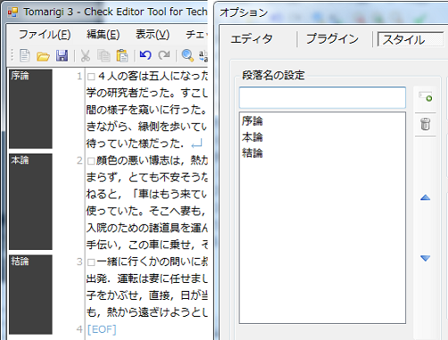
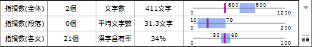
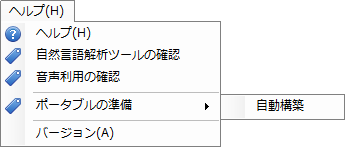
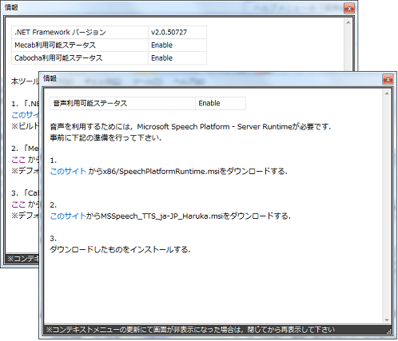
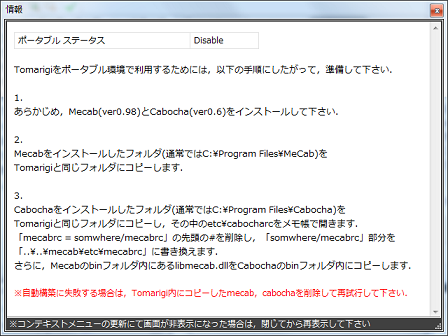

Tomarigiによる文のチェック
Tomarigiは，エディタ領域に入力された文を解析し，チェック結果を表示します．結果は，文書全体・段落ごと・各文をそれぞれカード(指摘カードと呼ぶ)化され，各カードごとに，指摘箇所が表示されます．ここで提示された指摘箇所は，クリックすることで，さらに指摘詳細カードとして，指摘理由や可能であれば修正候補を表示することになります．
操作の手順を次の通りとなります．
- エディタ領域に文章を入力する
- ボタンを押して文章のチェックを行う
- 指摘されたら，指摘箇所をクリックする

結果確認(指摘カード)
Tomarigiによるチェックを行った結果，指摘カードが作成されます．指摘カードには，含まれる指摘数や係り受け関係等の可視化などが含まれます．文内の指摘箇所には，色が付けられ，文全体をさす場合は，下線+●がつきます．また，指摘箇所が重複した場合は，■記号によって文末に付加されます．

結果確認(指摘詳細カード)
指摘詳細カードでは，１つ１つの指摘ごとの結果が表示されます．指摘カードとの違いは，指摘理由を表示するとともに，(存在する場合は)修正候補の提示も行います．また，指摘となる参考図が存在する場合も，それを表示することができます．指摘を非表示にした場合は，Tomarigiを終了するまでは，同じ文・同じ個所の指摘は再度表示されなくなります．

結果保存
Tomarigiによって得られた校正・推敲結果は，HTML形式で保存することができます．チェックメニューの「チェック結果の保存」をクリックして下さい．

文書プロパティ
Tomarigiでは，一度全体のチェックを行うと，文書プロパティの値が更新されます．文書プロパティとは，下図のように，文字数や異なり語数などの情報をここではさしています．

文書プロパティ領域の右下の をクリックすると，表示されます．
文書スタイル
この文書スタイルは，特にTomarigiそのものには影響しない参考程度の機能としてVer 0.3台から追加構築したものです．ここで文書スタイルと呼んでいるのは，主に次のものです．すべてメニューのオプションから設定することができます．また，このスタイルの状態を保存しておき，あとで切り替えて利用することもできます．
段落区切り文字と文区切り文字
段落の区切り対象と文の区切り対象は，これで決定されます．Tomarigiの解析対象は，「文書全体・段落ごと・文ごと」になりますので，解析結果に影響を及ぼします．あまり変更はおすすめできません．
段落名
段落名を指定しておくことで，エディタ領域の左側に段落名が表示されます．段落名の表示・非表示は，段落ガイドラインの下部をクリックすることで切り替えます．

文字数
文字数の指定を以下の4種の中から1つ指定できます．下図(文書プロパティ領域)は，600字以上800字以下が設定されている時の状態です．平均文字数や漢字含有率については，「おおよそ青領域におさめた方が良い」という目安となっています．
- x文字以上y文字以下
- x文字程度
- x文字以上
- x文字以下

環境確認
ヘルプメニューの「自然言語解析ツールの確認」や「音声利用の確認」を選ぶと，現在のPC環境を確認できます．すべて，Enableになっていれば，Tomarigiの動作環境が準備できているということになります．音声利用は，Disableでも読み上げ機能が利用できないだけで，Tomarigiそのものは利用できます．


ポータブル化
ヘルプメニューの「ポータブルの準備」をクリックすると，現在のTomarigi環境がポータブル化されたものかどうかを確認できます．また，MecabおよびCabochaをインストールしている環境下で，「自動構築」をクリックすると，自動的にポータブル環境を構築します．ポータブル化後は，TomarigiのフォルダをUSBメモリ等にコピーして，MecabやCabochaが未インストールの環境でも使用できるようになります．ただし，読み上げ機能は，ポータブル化できません．
